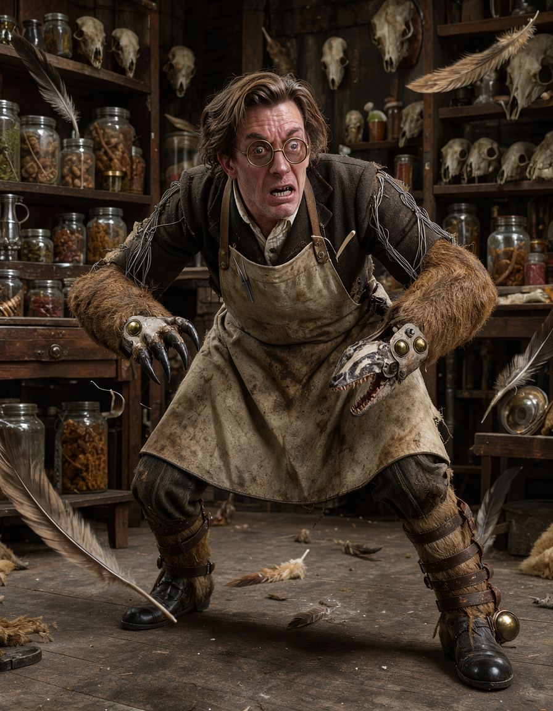
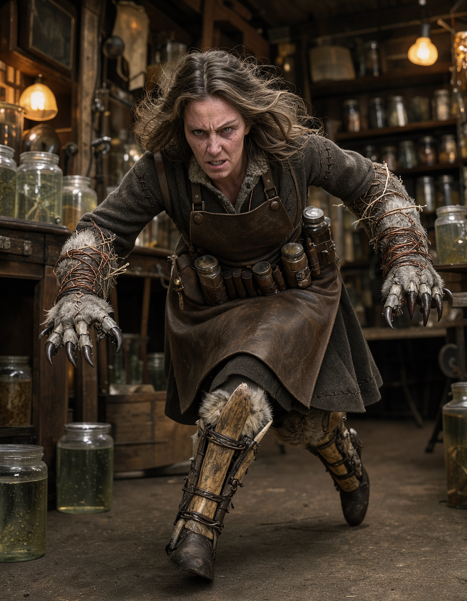
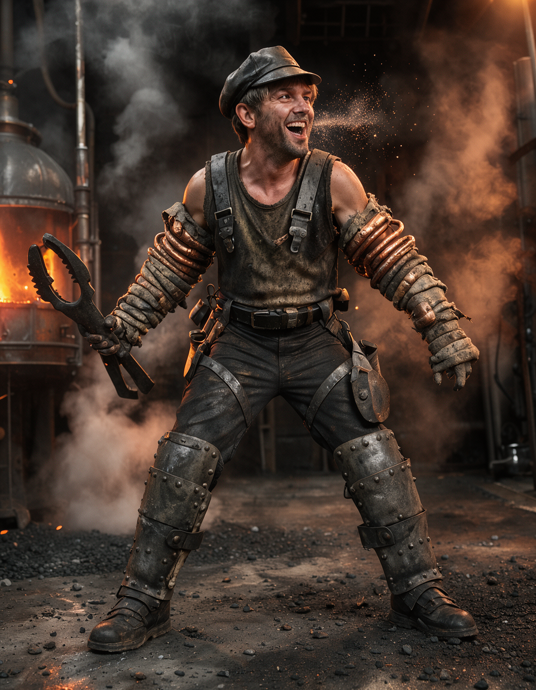
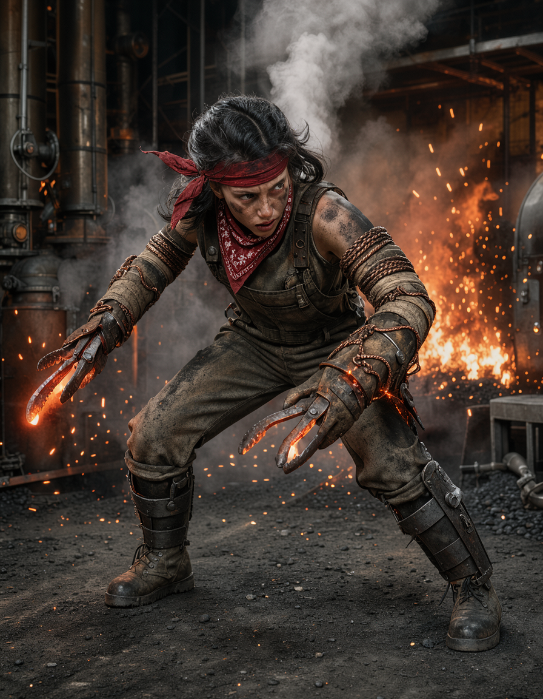
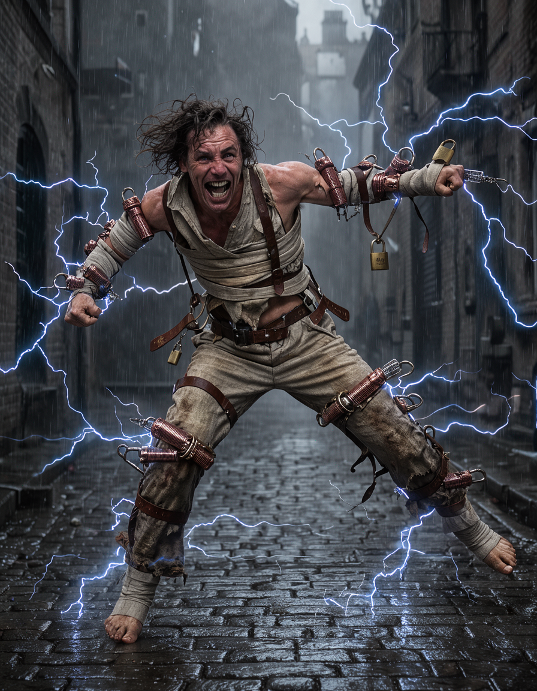
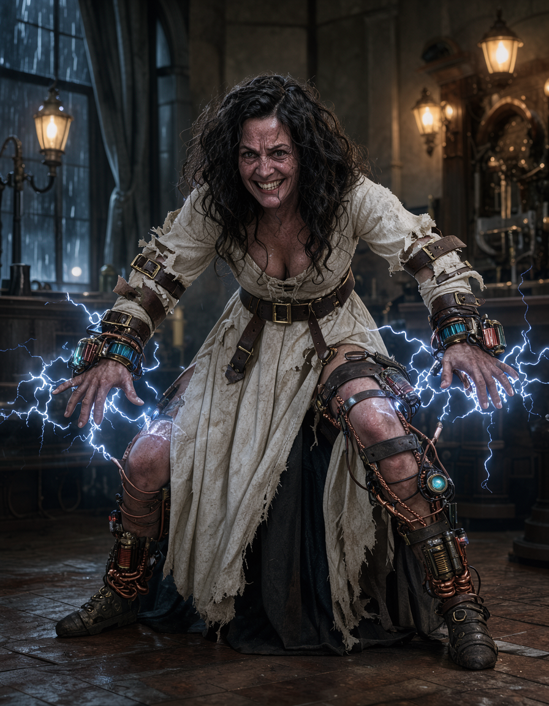
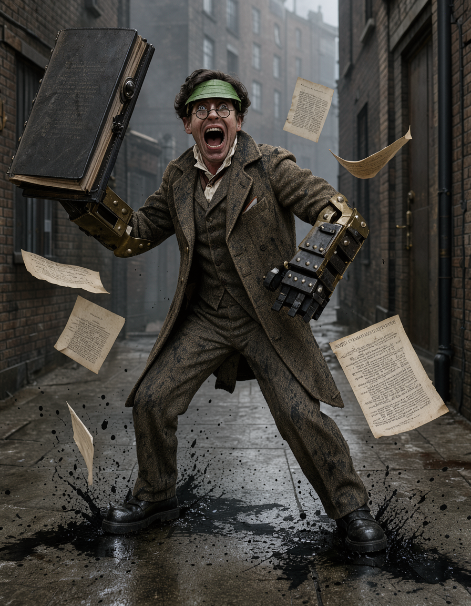
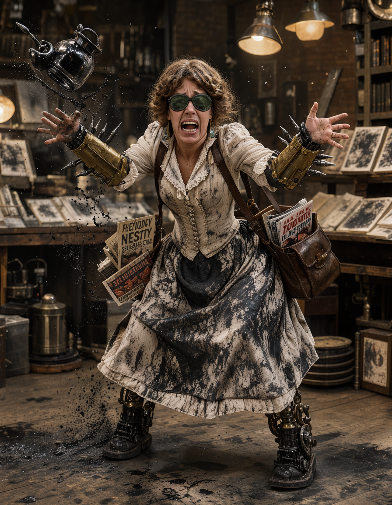
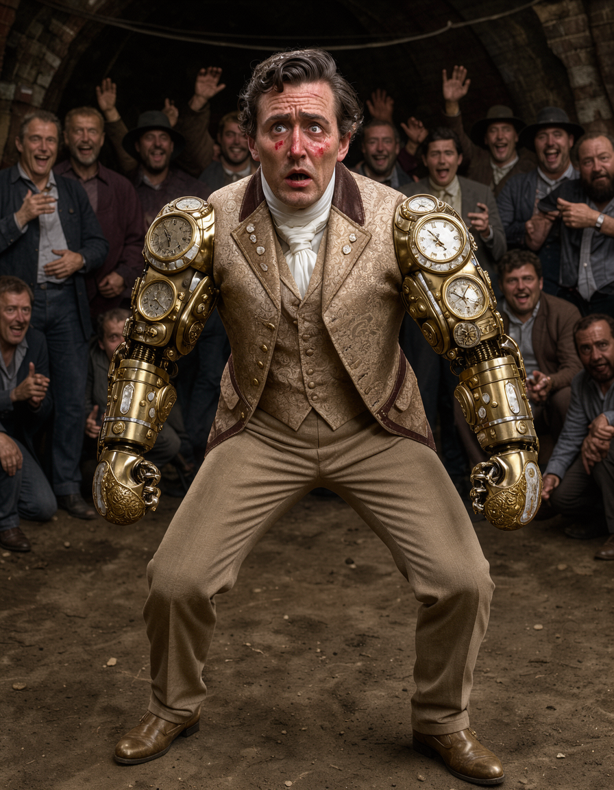
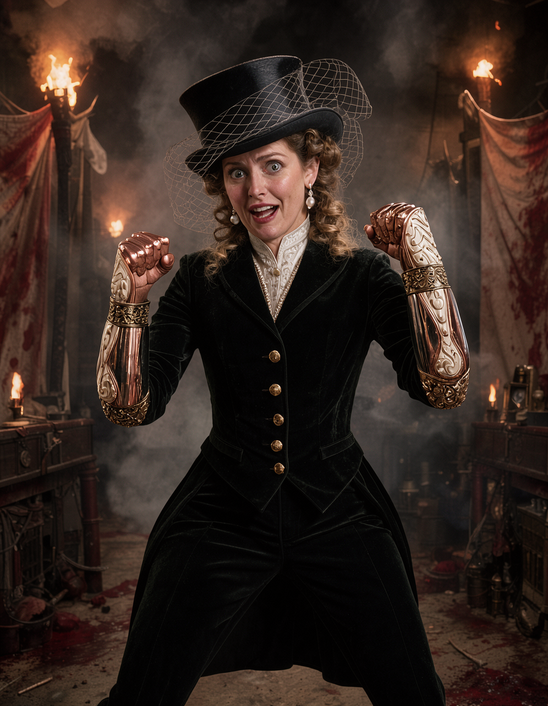

Completely re-imagining the open Amateur Brawler slot in Pitfighter (replacing Cuthbert Inkle). Generated locally via FLUX 3 on AMD Radeon RX 9070 XT across 5 distinct Victorian steampunk concepts with paired Male and Female visual designs.
Assistant at an unlicensed East End curiosity museum who grafts preserved beast armatures and animal bones onto themselves. Fights with unhinged predatory panic—wild leaping claw swipes, snapping jaw tackles, and desperate flailing.


Scrappy, feral teenage boiler stoker from the underground steam works who entered the pit for copper coins. Dirty gutter-cockney street scrap—slings coal dust, ducks under swings, and throws wild haymakers with glowing clinker-tongs.


Escapee from the Bethlem Royal Hospital (Bedlam) who treats combat as an electro-convulsive therapy session. Fights while half-bound in canvas restraint straps and brass padlocks with unpredictable convulsive spasms that whip into flying head-scissors and blue static shocks.


Starving sensationalist crime writer for the Old Sorrow Gazette, forced into the pit to conduct "first-hand research" on violent murder. Clumsy, theatrical, and terrified—quotes melodrama while swinging an iron-bound legal ledger and hurling blinding ink pots.


Pompous aristocratic dandy who bought their way into the pit after reading a single pamphlet on "The Noble Art of Self-Defence." Rigid, absurd 18th-century bareknuckle postures that instantly collapse into shrieking, biting, hair-pulling panic when hit once on the nose.

